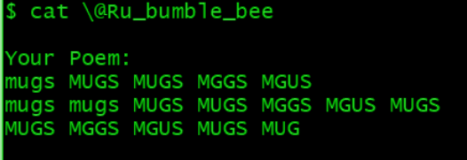
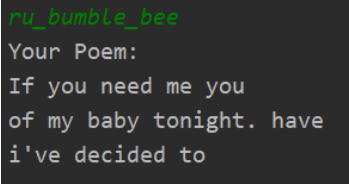
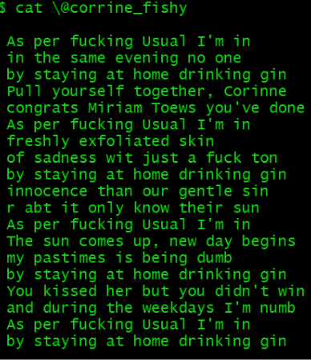

The Love Algorithm
Red Sign, red counter, red mugs. Red sunset filtering through the cafe windows. Lone roses, freshly cut, resting in the centre of each table. A ruby red leather notebook, a red pen that writes with black ink. Raspberry filling in the centre of her white powdered donut. And iced Hibiscus Passion Fruit refresher with crimson lipstick lingering on the rim of the glass.
Red drink spilled on white paper, black ink running like a frightened squid. Pink for a moment, before the sobs wracked the page. Grey soaking through the cracks of the gem. There she sat, still as a stone, as her world disintegrated. I couldn’t let that happen.
A flurry of movement: croissant dropping onto my plate, my chair scraping backwards, my hand reaching out, rescuing the drowning journal. The flick of the pages as I try like a dog to shake the journal dry. The tremble in her lips, the furrow in her brow as she tries to prevent any tears from being shed. The loose page falling to the ground, my hand rescuing it from its descent. Her eyes flashing back to life, as she bared her long red claws and grabbed her journal from me. Her leaving without a word.
But it was too late. I’d seen it. A printed picture of a tweet. A tweeted poem. The twitter handle of a poet. I’d seen it all; you’d left, but you were still with me because I had your tweets. I saw it and with it I saw your soul, and I wanted it to be mine so bad it hurt.
I’d write you a poem - was there any gesture more romantic than that? And it’s something easy to hide behind, a gesture so touching that it can be easily forgiven. It would be easy to execute, too, for anyone but me. I don’t write poems, I write code. So that’s what I’ll do.
Pink ink. Blue pen. Drawings on lined paper. Arrows, boxes, circles. Trying to visualize the unseen, the unknown. Working from the inside out; starting with the core, the heart, the soul. Then constructing a skeleton from there. Scribbles on sticky notes. Ideas, notes. Does it make them more or less important to be on paper? Scripts for pulling her tweets off the internet, a program that turns her tweets into poems. Libraries that count syllables. A generated haiku:

A bug had wormed its way into my code. Corruption, chaos, catastrophe. Mugs. Where did it lurk? The loop. Loopity loopy-loops always let coded chaos loose. I located the locust— he had been planted by my own hand. I had played God and failed; the code in the loop left without this lonely little line, and it lay watching as the loop faded into the distance, held back as its brethren were lifted up the chain of inheritance. Like a guardian angel, I moved the lonely line to its proper location. Rerun the program. A generated haiku, take 2.

It's... alive
But these poems are from her, not from me. Generate one from @corinne_fishy:

But this isn’t it, I thought I was smart, but it’s not a true poem that comes from the heart! It comes from my brain but that isn’t really the same. I pick up my pen, spilling some ink. I can do this! I can do this... I think. I write my poem, I take my time. Only once I’m happy will I post it online.
Roses are red,
Violets are blue
Let’s grab some coffee
At Cafe Sfouf